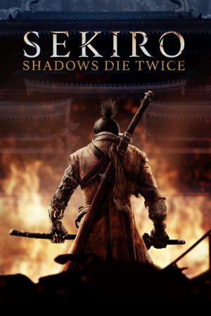

PlayStation 4, Xbox One, Windows
Originally released on March 22nd, 2019, Sekiro: Shadows Die Twice launched for PlayStation 4, Xbox One, and Windows. Unlike the studio's traditional RPGs, Sekiro is an action-adventure title featuring a fixed protagonist and no traditional leveling or character stats. Players assume the role of "The Wolf," a shinobi in a mythologized, Sengoku-era Japan, sworn to protect his master, the young Divine Heir, Kuro. When Kuro is kidnapped and the Wolf's arm is severed by the Ashina commander Genichiro, the Wolf is resurrected with a mysterious prosthetic tool and embarks on a quest of rescue and revenge.
The game's combat departs from the stamina management of the Souls series, focusing instead on a rhythmic posture system. Players must master precise sword-parrying, counters like the Mikiri, stealth, and vertical mobility via a grappling hook to break enemies' guards and deliver fatal deathblows. The Shinobi Prosthetic adds versatile tools like loaded axes, shuriken, flamethrowers, and an umbrella shield to exploit enemy weaknesses. Furthermore, the game's unique resurrection mechanic allows the Wolf to revive on the spot during combat, altering tactical options and maintaining relentless pacing.
Directed by Hidetaka Miyazaki, Sekiro received widespread critical acclaim for its breathtaking artistic design, rich worldbuilding inspired by Buddhist motifs and Japanese folklore, and intensely rewarding boss encounters. It won Game of the Year at The Game Awards 2019 and has sold over 10 million copies globally. A major free update in October 2020 added "Reflections of Strength" (boss replays), "Gauntlets of Strength" (boss rush challenges), player remnants, and unlockable cosmetic skins. Sekiro stands as a high-water mark for FromSoftware, proving the studio's mastery of fast-paced, skill-based action design.
FromSoftware
- Official developer website.
Sekiro Fandom Wiki
- Contains lots of useful information about Sekiro..
Sekiro Fextralife Wiki
- Another wiki that contains lots of useful information about Dark Souls games.
Sekiro Online Manual (JP)
- A cool digital manual for the PS4 version of the game.
Sekiro Online Manual (JP)
- A cool digital manual for the Xbox One version of the game.
Sekiro Online Manual (JP)
- A cool digital manual for the Windows version of the game.
Steam Grid DB (Sekiro)
- Contains lots of cool options for artwork that can be used in your Steam library.